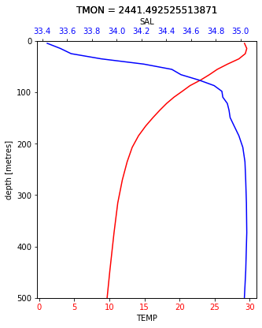

Big Data¶
Dask¶
A package which facilitates chunking of data to fit in memory and parallelism to your code
Setup is as simple as enable it and forget
It integrates with popular packages like Numpy, Pandas and Xarray, so no additional syntaxes to learn.
Can be deployed on simple laptops, HPCs and even on cloud computers.
Exercise¶
Open OSCAR surface ocean currents (large dataset with 10 GB size) and chunk it
compute monthly mean currents using all cores of your cpu
use 3D ocean data (EN4) to draw temperature and salinity vertical profile
The data is too large to be distributed through Github. You can dowload the data from link below:
OSCAR: https://podaac.jpl.nasa.gov/dataset/OSCAR_L4_OC_third-deg
EN4: https://www.metoffice.gov.uk/hadobs/en4/
import xarray as xr
import numpy as np
import cmocean
import cartopy as cr
import cartopy.crs as ccrs
import matplotlib.pyplot as plt
import cartopy.feature as cfeature
from cartopy.mpl.gridliner import LONGITUDE_FORMATTER, LATITUDE_FORMATTER
%matplotlib inline
from dask.distributed import Client
from dask.diagnostics import ProgressBar
client = Client() # your local cluster
client # click the dashboard link to visualize the task and worker status
Client
|
Cluster
|
ds = xr.open_dataset('/home/lijo/WORK/oceanCurrValidation/data/oscar_data/oscar_vel2003_2011.nc',chunks={'latitude':100,'latitude':1000,'time':10})
ds.nbytes/1e9
11.97881186
ds
<xarray.Dataset>
Dimensions: (depth: 1, latitude: 481, longitude: 1201, time: 648)
Coordinates:
* longitude (longitude) float64 20.0 20.33 20.67 21.0 ... 419.3 419.7 420.0
* latitude (latitude) float64 80.0 79.67 79.33 79.0 ... -79.33 -79.67 -80.0
* depth (depth) float32 15.0
* time (time) datetime64[ns] 2003-01-01 2003-01-06 ... 2011-12-26
Data variables:
u (time, depth, latitude, longitude) float64 dask.array<chunksize=(10, 1, 481, 1201), meta=np.ndarray>
v (time, depth, latitude, longitude) float64 dask.array<chunksize=(10, 1, 481, 1201), meta=np.ndarray>
um (time, depth, latitude, longitude) float64 dask.array<chunksize=(10, 1, 481, 1201), meta=np.ndarray>
vm (time, depth, latitude, longitude) float64 dask.array<chunksize=(10, 1, 481, 1201), meta=np.ndarray>
Attributes:
CDI: Climate Data Interface version ?? (http://mpimet.mpg.de/cdi)
Conventions: CF-1.4
history: Wed Oct 18 12:18:41 2017: cdo mergetime oscar_vel2003.nc ...
source: Kathleen Dohan, ESR (kdohan@esr.org)
VARIABLE: Ocean Surface Currents
DATATYPE: 1/72 YEAR Interval
DATASUBTYPE: unfiltered
GEORANGE: 20 to 420 -80 to 80
PERIOD: Jan.01,2003 to Dec.26,2003
year: 2003
description: OSCAR Third Degree Sea Surface Velocity
CREATION_DATE: 16:06 04-Apr-2017
version: 2017.0
contact: Kathleen Dohan (kdohan@esr.org)
company: Earth & Space Research, Seattle, WA
reference: Bonjean F. and G.S.E. Lagerloef, 2002 ,Diagnostic model a...
note1: Maximum Mask velocity is the geostrophic component at all...
note2: Longitude extends from 20 E to 420 E to avoid a break in ...
CDO: Climate Data Operators version 1.7.2 (http://mpimet.mpg.d...
ds.time
<xarray.DataArray 'time' (time: 648)>
array(['2003-01-01T00:00:00.000000000', '2003-01-06T00:00:00.000000000',
'2003-01-11T00:00:00.000000000', ..., '2011-12-16T00:00:00.000000000',
'2011-12-21T00:00:00.000000000', '2011-12-26T00:00:00.000000000'],
dtype='datetime64[ns]')
Coordinates:
* time (time) datetime64[ns] 2003-01-01 2003-01-06 ... 2011-12-26
Attributes:
standard_name: time
long_name: Day since 1992-10-05 00:00:00
axis: T
ds_mean = ds.groupby('time.month').mean().compute()
ds_mean.sel(latitude=slice(30,-30),longitude=slice(60,120),month=[4,6,9,10]).u.plot(col='month',col_wrap=2,levels=np.arange(-1,1,0.1))
<xarray.plot.facetgrid.FacetGrid at 0x7f9eec01b8d0>
ds_en4 = xr.open_dataset('/home/lijo/WORK/oceanCurrValidation/data/en42003-2010.nc',decode_times=False)
ds_en4
<xarray.Dataset>
Dimensions: (DEPTH: 42, LAT: 173, LON: 360, TMON: 96, bnds: 2)
Coordinates:
* LON (LON) float32 1.0 2.0 3.0 4.0 5.0 ... 357.0 358.0 359.0 360.0
* LAT (LAT) float32 -83.0 -82.0 -81.0 -80.0 ... 86.0 87.0 88.0 89.0
* DEPTH (DEPTH) float32 5.0215898 15.07854 ... 5050.9897 5350.272
* TMON (TMON) float64 2.436e+03 2.437e+03 ... 2.53e+03 2.531e+03
Dimensions without coordinates: bnds
Data variables:
DEPTH_bnds (DEPTH, bnds) float32 ...
TEMP (TMON, DEPTH, LAT, LON) float64 ...
SAL (TMON, DEPTH, LAT, LON) float64 ...
Attributes:
history: FERRET V7.4 (optimized) 5-Jul-18
Conventions: CF-1.6
ds_en4.nbytes/1e9
4.017810764
ds_temp = ds_en4.sel(LAT=slice(10,12),LON=slice(80,82)).isel(TMON=5).TEMP
ds_sal = ds_en4.sel(LAT=slice(10,12),LON=slice(80,82)).isel(TMON=5).SAL
t = xr.where(ds_temp<1000,ds_temp,np.nan) - 273.15
s = xr.where((ds_sal<1000) & (ds_sal>10),ds_sal,np.nan)
fig,ax = plt.subplots(figsize=(5, 6))
t.mean(dim=['LAT','LON']).plot(ax=ax,y='DEPTH',yincrease=False,ylim=(500,0),color='r')
ax2 = ax.twiny()
s.mean(dim=['LAT','LON']).plot(ax=ax2,y='DEPTH',yincrease=False,ylim=(500,0),color='b')
for ticklabel in ax.get_xticklabels():
ticklabel.set_color('r')
for ticklabel in ax2.get_xticklabels():
ticklabel.set_color('b')
